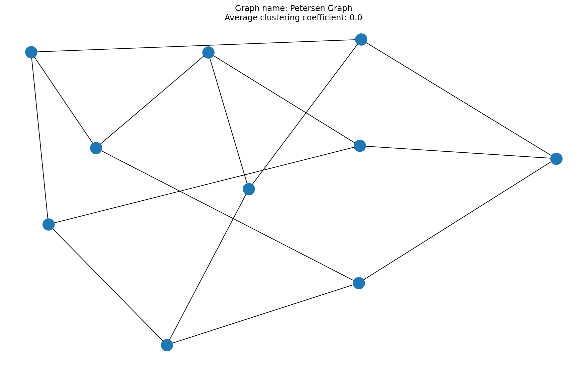
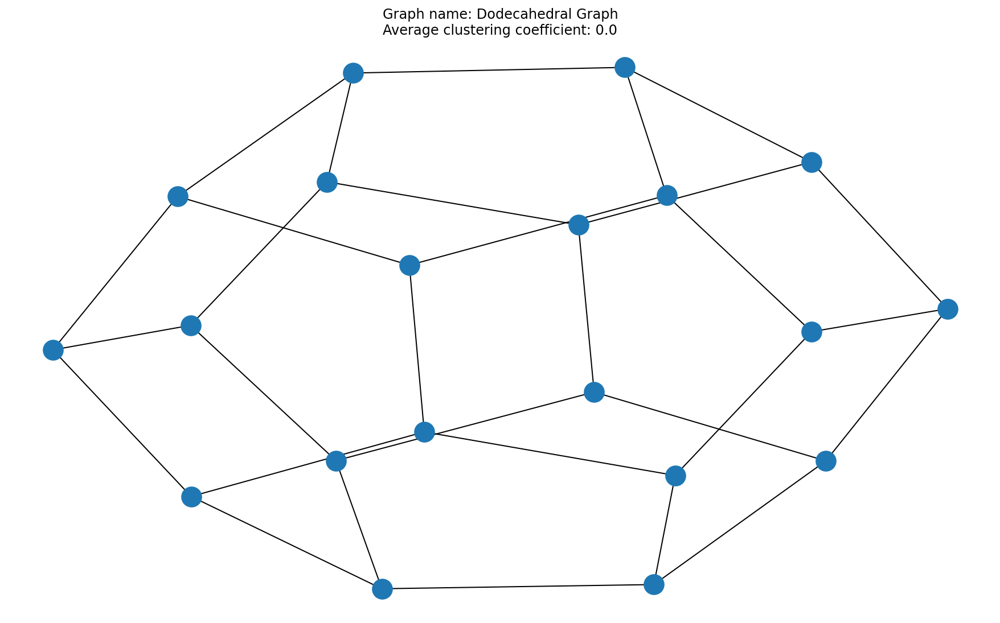

NSCI0007 Exam Specimen Answers¶
NB the specimen answers are one way to answer the questions. There are other valid solutions.
# Question 1
import numpy as np
G_1 = np.array([[0, 1, 1, 0, 0],
[1, 0, 1, 0, 1],
[1, 1, 0, 1, 1],
[0, 0, 1, 0, 1],
[0, 1, 1, 1, 0]])
def neighbours(A, i):
r = A[i,:]
n = []
for j in range(len(r)):
if r[j] == 1:
n.append(j)
return n
neighbours(G_1, 0)
# 4/4 if correct in general case
# -1 if minor error in calculation
# -2 if incorrect algorithm (e.g. does not correctly )
[1, 2]
# Question 2
def clustering_coefficient(A, i):
x = neighbours(A, i)
n = len(x)
if n <= 1: return 0
m = 0
for j in range(n):
for k in range(j+1, n):
if A[x[j], x[k]] == 1:
m += 1
return m / (n**2 - n)
clustering_coefficient(G_1, 2)
# 5/5 if correct in general case
# -1 if minor error in calculation
# -1 if no return statement
# -2 if incorrect algorithm
## NB the calculation must work for a general graph, not just this specific graph.
0.25
# Question 3
def is_path(A, nodes):
for i in range(len(nodes) - 1):
if A[nodes[i], nodes[i+1]] == 0:
return False
nodes_unique = []
for i in nodes:
if i in nodes_unique:
return False
nodes_unique.append(i)
return True
print(is_path(G_1, [0, 2, 1, 4]))
print(is_path(G_1, [0, 1, 2, 0]))
print(is_path(G_1, [0, 3, 4]))
# 5/5 if correct in general case
# -1 if minor error in calculation
# -1 if no return statement
# -2 if incorrect algorithm
True
False
False
# Question 4
def average_clustering_coefficient(A):
c = []
for i in range(len(A)):
c.append(clustering_coefficient(A, i))
return np.mean(c)
print(average_clustering_coefficient(G_1))
# 4/4 if correct in general case
# 3/4 if incorrect only due to error in clustering_coefficient function
# 0/4 if incorrect
0.3833333333333333
# Question 5
import networkx as nx
import matplotlib.pyplot as plt
def generate_graph(A):
G = nx.Graph()
n = len(A)
for i in range(n):
for j in range(n):
if A[i,j] == 1:
G.add_edge(i, j)
return G
G1 = generate_graph(G_1)
nx.draw(G1)
# 4/4 if correctly plotted the graph (any plotting style OK)
# 3/4 if plotted digraph or other minor error
# 2/4 if correctly created graph object but no graph plotted

# Question 6
for i in range(3):
with open("graph0{}.txt".format(i)) as f:
title = f.readline().strip()
n = int(f.readline())
A = np.zeros((n, n))
for i in range(n):
x = f.readline().strip()
for j in range(n):
A[i,j] = int(x[j])
G = generate_graph(A)
plt.figure()
nx.draw(G)
acc = average_clustering_coefficient(A)
x = plt.title("Graph name: {}\nAverage clustering coefficient: {}".format(title, acc))
# 8/8 for 3 correctly plotted graphs
# -1 for each error in figures
# 4/8 if correctly read and parsed file and generated matrix, but no graphs plotted
# 2/8 if correctly read and parsed file but matrix incorrect
# NB It is not necessary to use a loop (repeated code is OK) but the data MUST be read from the file

